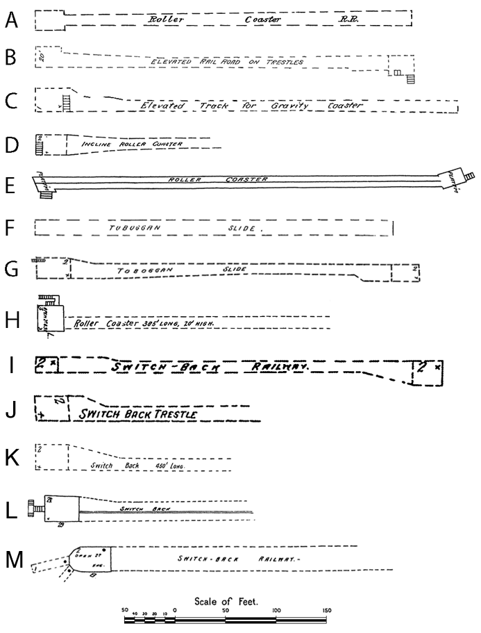

Historical roller coasters are sometimes shown on large scale maps and atlases (usually at 1 inch = 50 feet, or 1 inch = 100 feet) that depict man-made structures. The most widespread of these include the fire insurance maps produced by the Sanborn Map Company and its predecessors. The original maps use color to distinguish among various construction materials. Full-color digitized versions of maps for which copyright has expired are available for some states from the Library of Congress and other sources. Black-and-white microfilm copies, and digital versions produced from the microfilms, are available in many state, public, and university libraries, or by subscription through ProQuest.
Inclusion of early roller coasters on these maps is sparse, because the maps were produced first for the most built-up areas, while parks and rides tended to be located in outlying areas. Sometimes only portions of roller coasters are shown. Several of the earliest rides are illustrated here.
Circular coasters shown on Sanborn fire maps. Dates are those of the maps.
A Cuyahoga Falls, Ohio (above, 1884; below, 1889)
B Pleasant Beach, Syracuse, New York, 1892

Linear coasters shown on Sanborn fire maps, with map dates.
A Atlantic City, New Jersey, 1886
B Philion's Little Coney Island, Paterson, New Jersey, 1887
C Central Park, San Francisco, California, 1887
D Reeds Lake, Grand Rapids, Michigan, 1888
E Arcadia Hotel, Santa Monica, California, 1888
F Asbury Park, New Jersey, 1890
G Highland Beach, New Jersey, 1890
H Cedar Point, Sandusky, Ohio, 1893
I Presque Isle, Toledo, Ohio, 1895
J Troost Park, Kansas City, Missouri, 1896
K Courtland Beach, Omaha, Nebraska, 1901
L Crocker Park, Des Moines, Iowa, 1901
M Euclid Beach, Cleveland, Ohio, 1903